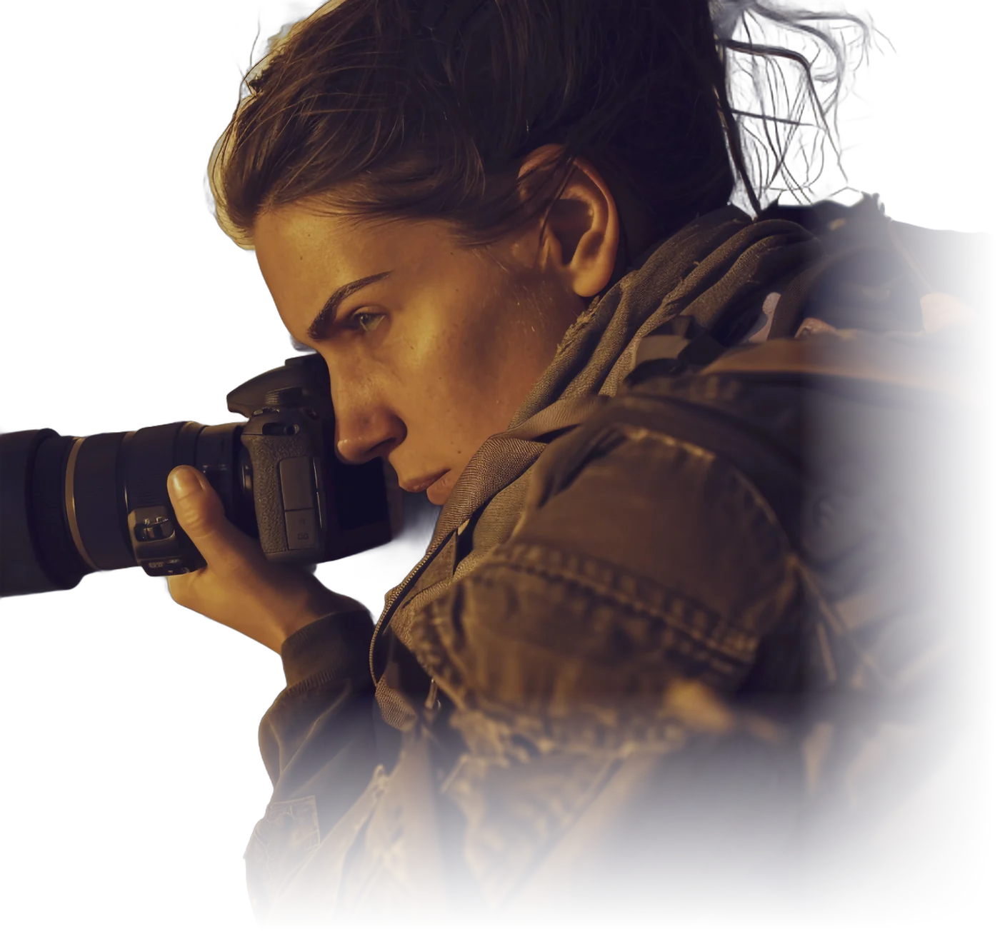

Night Notes 2026 · Vol. 01
The Cityafter Dark
One night in the city, 17:48 to 05:52. Twenty-one frames, kept in the order the night gave them.
In front17:48Six Lanes, One Car
Scroll to begin the nightIndex
Every frame in time order. Open any row to see the full photograph and its note.
About
Nia Okoro
Cities are quietest when nobody is watching them. I photograph the hours between the commute home and the first delivery van: wet streets, lit windows, empty platforms.
Prints and commissions by appointment.
hello@studio.example